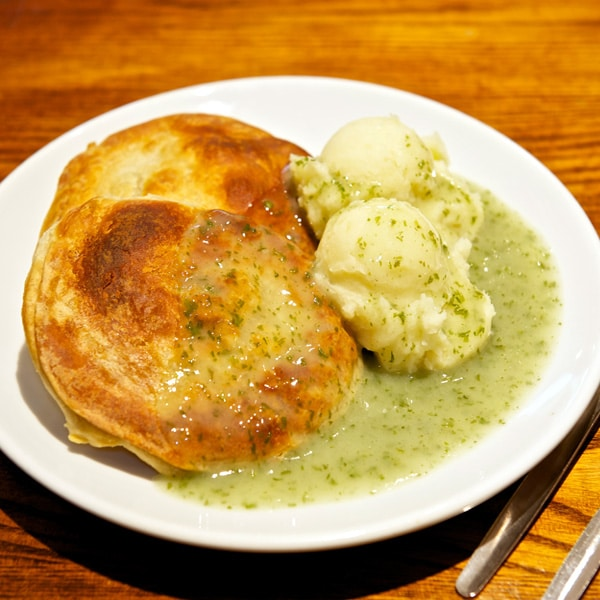

Pie & Mash

Description
Pie & mash is a traditional working class dish from the 1800s originating in East London. It is comrpised of 3 parts; a minced beef pie, mashed potatoes, and a parsley sauce known as "liquor".
Pie
Ingredients
- 1 lb (450g) minced beef
- 1 finely chopped medium onion
- 1 tbsp Worchestershire sauce
- 1 tsbp vegetable oil
- 1 cup beef stock
- 1/2 tsp salt
- 1/4 tsp black pepper
- 1 tbsp cornstarch
- 2 pre-made shortcrust pastry sheets
Steps
- Preheat oven to 375°F(190°C).
- Heat the oil in a pan and cook the onions until soft.
- Add the minced beef, salt, and pepper to the onions and cook until the beef is browned.
- Mix cornstarch with a bit of cold water in a small bowl to create a slurry.
- Add the beef stock and Worcestershire sauce to the pan, then stir in the cornstarch slurry. Simmer for a few minutes until the sauce thickens.
- Roll out the pastry sheets and line the base of a 9-inch pie dish with one sheet, trimming the excess pastry.
- Spoon the beef mixture into the pastry-lined dish.
- Cover the pie with the second pastry sheet, sealing the edges with a fork.
- Bake the pie for 25-30 minutes or until the pastry is golden and crisp.
Mash
Ingredients
- 2 lbs (900g) potatoes, peeled and cut into chunks
- 1/4 cup (60ml) milk
- 2 tbsp butter
- Salt and pepper to taste
Steps
- In a large pot, boil the potatoes in salted water until tender (15-20 minutes).
- Drain the water from the potatoes into a separate saucepan and return them to the pot.
- Add the milk, butter, salt, and pepper, and mash until smooth and creamy.
Liquor
Ingredients
- Potato stock
- 1/2 cup (125ml) chopped fresh parsley
- 1/4 cup (60ml) all-purpose flour
- Salt and pepper to taste
Steps
- Heat the potato stock from the mashed potatoes over a medium heat.
- Add in the parsley and bring to a rolling boil.
- Whisk in the flour gradually until the liquor thickens.
- Turn off the heat and whisk in the salt and pepper.